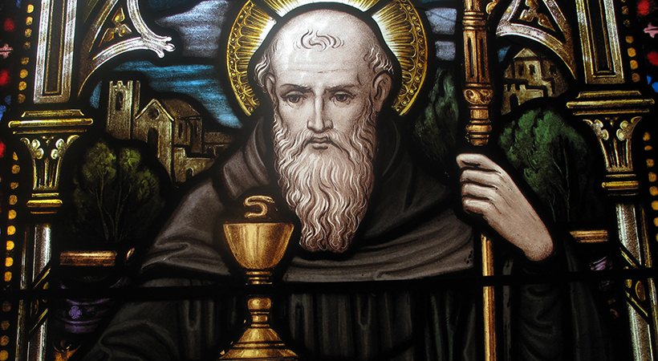
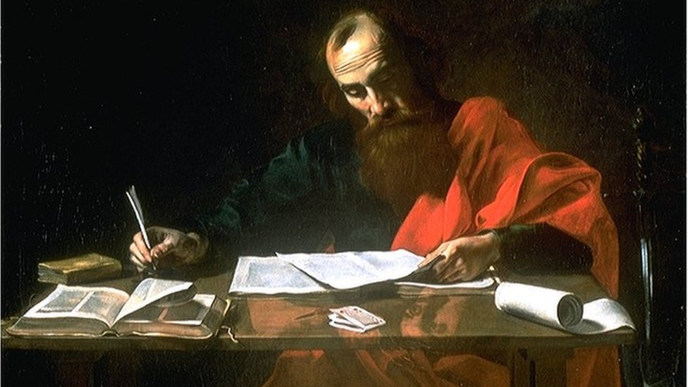
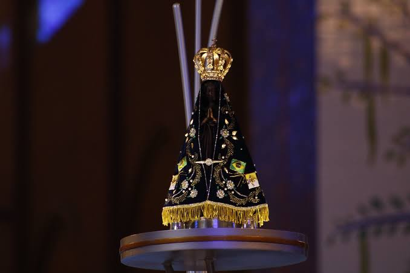

Fé que se vive no cotidiano
São bento
Na oração e no trabalho, um caminho de paz
Conheça a história
Fé que se vive no cotidiano
Na oração e no trabalho, um caminho de paz
Conheça a história
A coragem de recomeçar
Todo caminho pode se tornar um recomeço
Conheça a história
Rainha e Padroeira do Brasil
Um manto de esperança sobre nossa história
Conheça a história